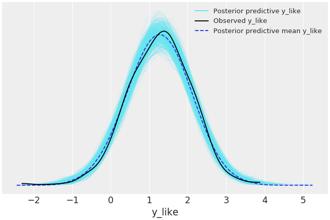
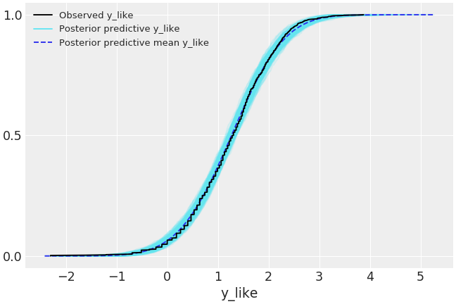
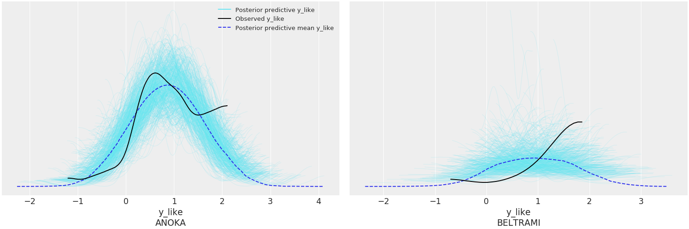
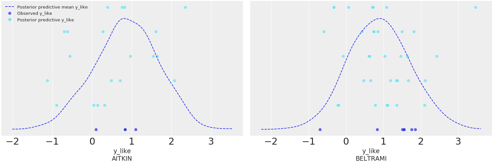
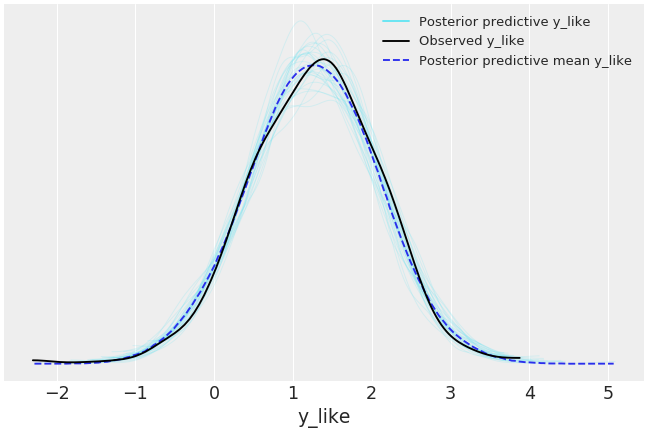

arviz.plot_ppc¶
-
arviz.plot_ppc(data, kind='kde', alpha=None, mean=True, figsize=None, textsize=None, data_pairs=None, var_names=None, coords=None, flatten=None, flatten_pp=None, num_pp_samples=None, random_seed=None, jitter=None, animated=False, animation_kwargs=None, legend=True, ax=None, backend=None, backend_kwargs=None, show=None)[source]¶ Plot for posterior predictive checks.
- Parameters
- dataaz.InferenceData object
InferenceData object containing the observed and posterior predictive data.
- kindstr
Type of plot to display (kde, cumulative, or scatter). Defaults to kde.
- alphafloat
Opacity of posterior predictive density curves. Defaults to 0.2 for kind = kde and cumulative, for scatter defaults to 0.7
- meanbool
Whether or not to plot the mean posterior predictive distribution. Defaults to True
- figsizetuple
Figure size. If None it will be defined automatically.
- textsize: float
Text size scaling factor for labels, titles and lines. If None it will be autoscaled based on figsize.
- data_pairsdict
Dictionary containing relations between observed data and posterior predictive data. Dictionary structure: Key = data var_name Value = posterior predictive var_name For example, data_pairs = {‘y’ : ‘y_hat’} If None, it will assume that the observed data and the posterior predictive data have the same variable name.
- var_nameslist
List of variables to be plotted. Defaults to all observed variables in the model if None.
- coordsdict
Dictionary mapping dimensions to selected coordinates to be plotted. Dimensions without a mapping specified will include all coordinates for that dimension. Defaults to including all coordinates for all dimensions if None.
- flattenlist
List of dimensions to flatten in observed_data. Only flattens across the coordinates specified in the coords argument. Defaults to flattening all of the dimensions.
- flatten_pplist
List of dimensions to flatten in posterior_predictive. Only flattens across the coordinates specified in the coords argument. Defaults to flattening all of the dimensions. Dimensions should match flatten excluding dimensions for data_pairs parameters. If flatten is defined and flatten_pp is None, then flatten_pp=flatten.
- num_pp_samplesint
The number of posterior predictive samples to plot. For kind = ‘scatter’ and animation = False if defaults to a maximum of 5 samples and will set jitter to 0.7 unless defined otherwise. Otherwise it defaults to all provided samples.
- random_seedint
Random number generator seed passed to numpy.random.seed to allow reproducibility of the plot. By default, no seed will be provided and the plot will change each call if a random sample is specified by num_pp_samples.
- jitterfloat
If kind is “scatter”, jitter will add random uniform noise to the height of the ppc samples and observed data. By default 0.
- animatedbool
Create an animation of one posterior predictive sample per frame. Defaults to False.
- animation_kwargsdict
Keywords passed to animation.FuncAnimation.
- legendbool
Add legend to figure. By default True.
- ax: axes, optional
Matplotlib axes or bokeh figures.
- backend: str, optional
Select plotting backend {“matplotlib”,”bokeh”}. Default “matplotlib”.
- backend_kwargs: bool, optional
These are kwargs specific to the backend being used. For additional documentation check the plotting method of the backend.
- showbool, optional
Call backend show function.
- Returns
- axesmatplotlib axes or bokeh figures
Examples
Plot the observed data KDE overlaid on posterior predictive KDEs.
>>> import arviz as az >>> data = az.load_arviz_data('radon') >>> az.plot_ppc(data)
Plot the overlay with empirical CDFs.
>>> az.plot_ppc(data, kind='cumulative')
Use the coords and flatten parameters to plot selected variable dimensions across multiple plots.
>>> az.plot_ppc(data, coords={'observed_county': ['ANOKA', 'BELTRAMI']}, flatten=[])
Plot the overlay using a stacked scatter plot that is particularly useful when the sample sizes are small.
>>> az.plot_ppc(data, kind='scatter', flatten=[], >>> coords={'observed_county': ['AITKIN', 'BELTRAMI']})
Plot random posterior predictive sub-samples.
>>> az.plot_ppc(data, num_pp_samples=30, random_seed=7)
